Phiên bản cập nhật ngày 18/10/2019 được phát hành ngày 24/10/2019 được bổ sung sửa đổi các chức năng như sau:
1. Chỉnh sửa giao diện.
Chỉnh sửa toàn bộ giao diện các form về kích thước form, kích thước các nút chức năng, thay đổi các icon phù hợp và ý nghĩa với từng chức năng:
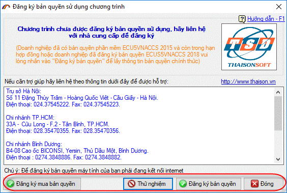
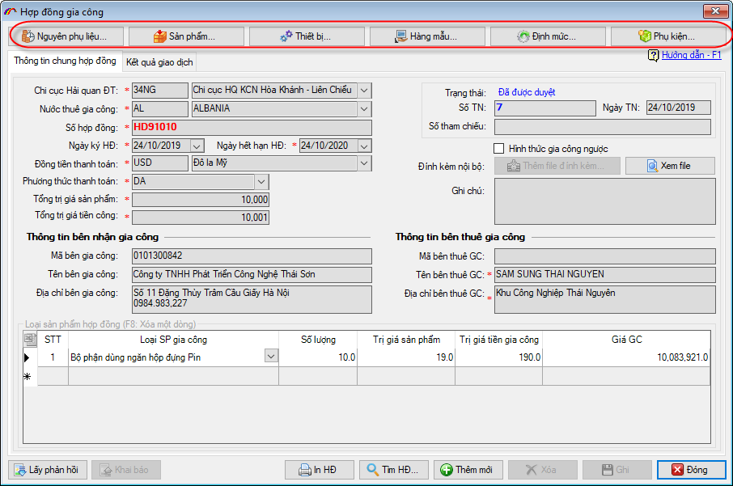
Các tiêu chí tìm kiếm trong các form "Báo cáo tờ khai xuất nhập khẩu", "Báo cáo tổng hàng hóa xuất nhập khẩu", "Báo cáo chi tiết hàng hóa xuất nhập khẩu" được thu gọn, và có thể mở ra khi cần:
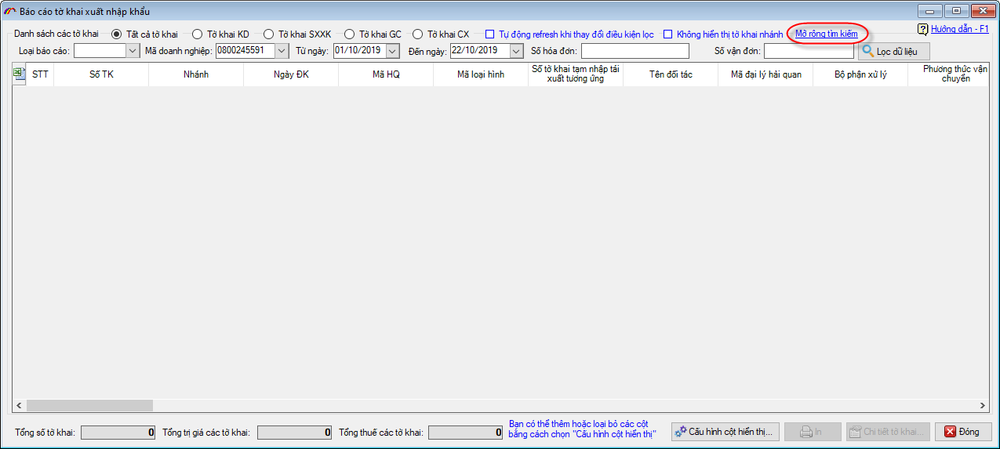
2. Thay đổi vị trí các chức năng.
Chuyển chức năng "Khai báo cơ sở sản xuất, nơi lưu giữ" từ menu "Sổ quyết toán" sang menu "Nghiệp vụ khác":
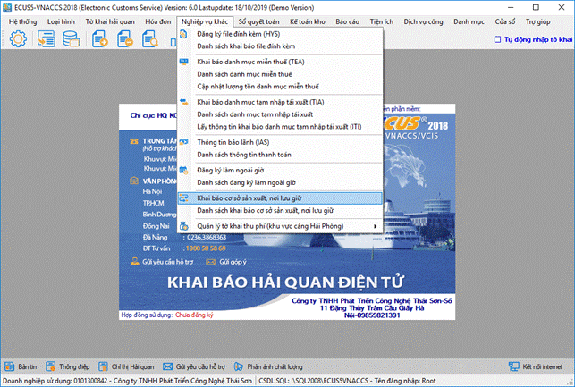
Chuyển chức năng "Đăng ký làm ngoài giờ" từ menu "Tờ khai Hải quan" sang menu "Nghiệp vụ khác":
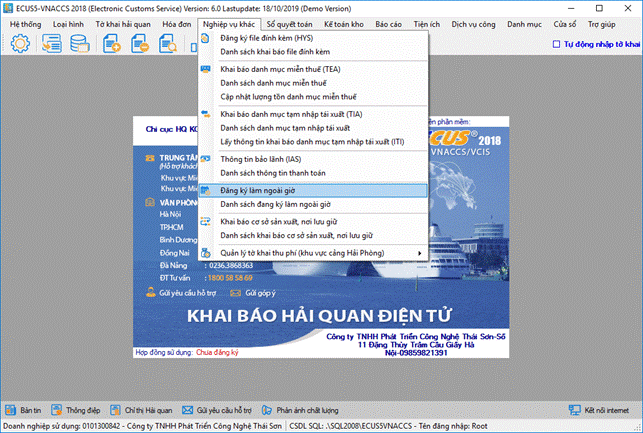
3. Ẩn các chức năng không còn sử dụng hoặc chưa sử dụng trên chương trình.
Ẩn chức năng "Khai báo một cửa (VNACCS)" và chức năng "Khai báo E-manifest (VNACCS)" trong menu "Nghiệp vụ khác":
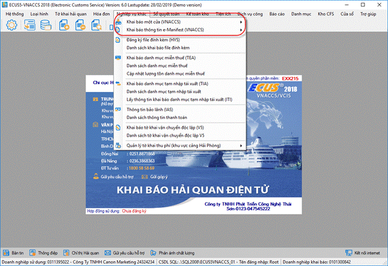
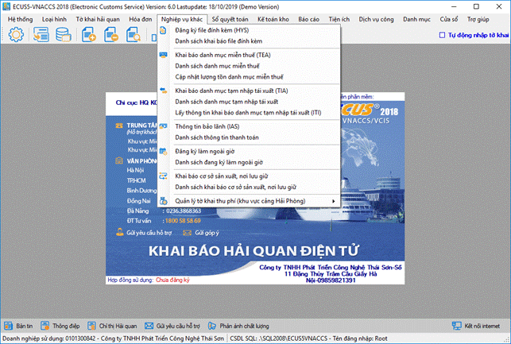
Loại hình sản xuất xuất khẩu: Ẩn các chức năng "Đồng bộ dữ liệu tờ khai ECUS5VNACCS sang ECUS4", "Thanh lý phiên bản V4" và "Khai báo thanh lý V4" trong menu "Loại hình \ Thanh lý sản xuất xuất khẩu":
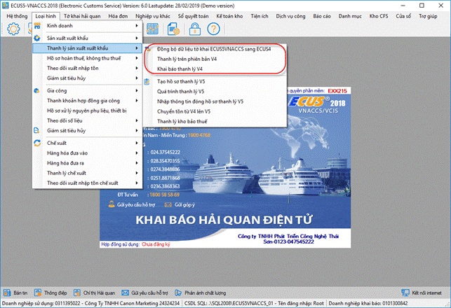
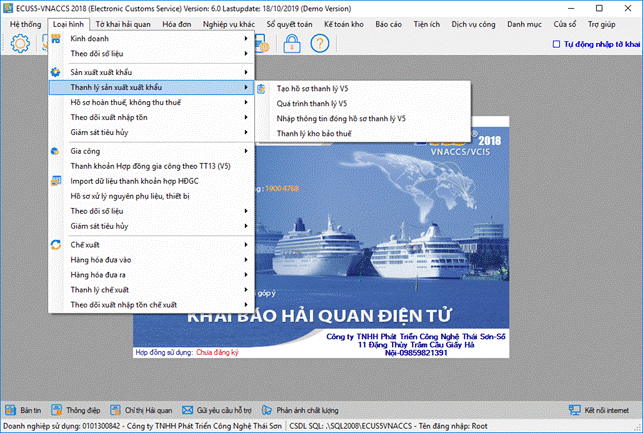
Loại hình gia công: Ẩn các chức năng: "Đồng bộ dữ liệu tờ khai ECUS5VNACCS sang ECUS4", "Thanh khoản phiên bản V4", "Khai báo thanh khoản hợp đồng gia công V4, V5", "Khai báo NPL cung ứng khi thanh khoản HĐGC", "Khai báo NPL tái xuất khi thanh khoản HĐGC" và "Danh sách chứng từ thanh toán HĐGC" trong menu "Loại hình/Gia công/ Thanh khoản gia công":
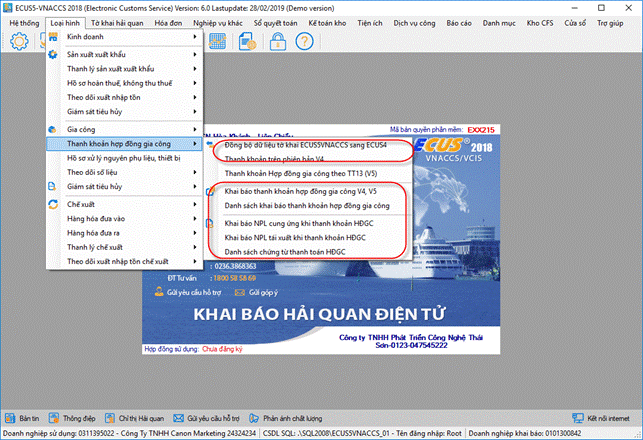
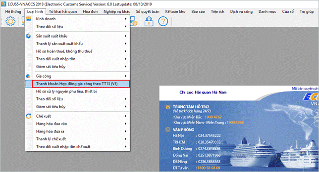
Loại hình chế xuất: Ẩn các chức năng: "Khai báo thanh lý tài sản cố định", "Khai báo giải trình" và "Khai báo quyết định kiểm tra" trong menu "Loại hình / Chế xuất":
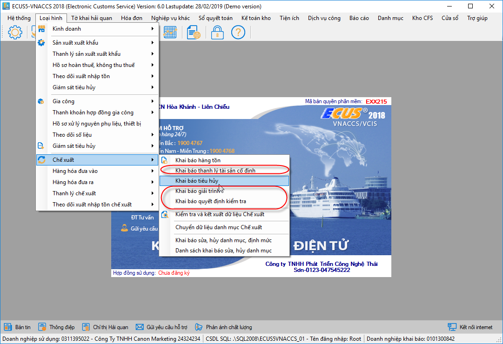
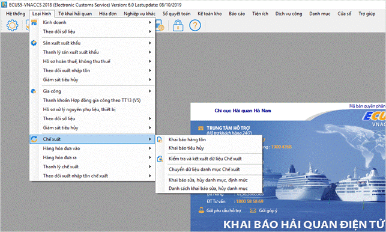
Thay đổi cách thức tìm kiếm "Trạng thái" của các lần khai báo danh mục NPL, SP, Định mức:
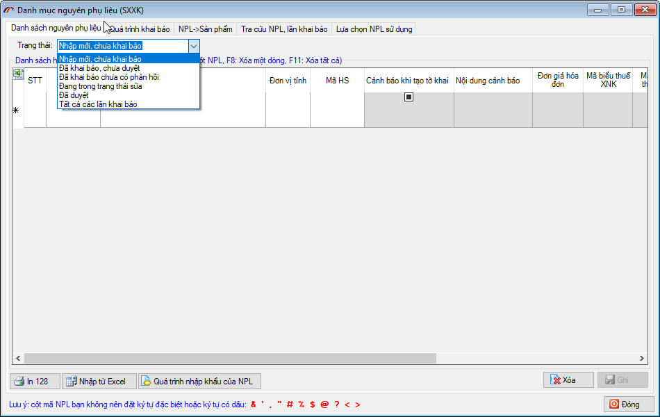
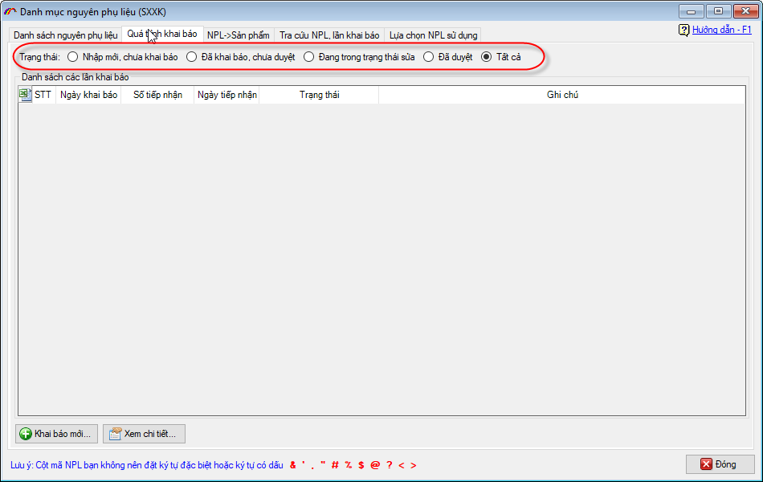
Thay thế tab khai báo sửa hủy trên các form khai báo danh mục NPL, SP và Định mức bằng tab "Kết quả Hải quan trả về", chức năng khai báo sửa, hủy được thay thế bằng các nút chức năng "Thêm mới lần hủy", "Thêm mới lần sửa":
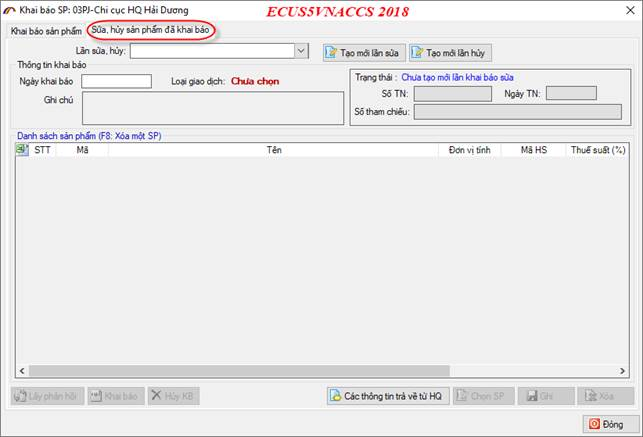
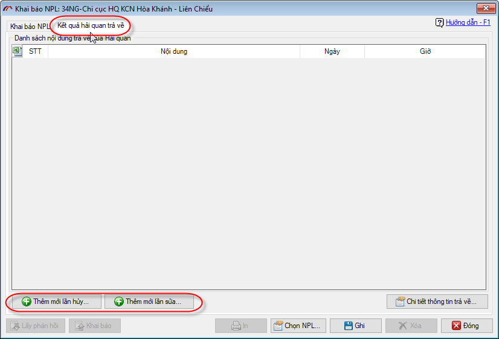
Ẩn các chức năng "8.Đăng ký chữ ký số với Hải quan", "9.Xem danh sách đăng ký CKS từ Hải quan" và "10.Đăng ký mã thông tin CKS" trong menu "Hệ thống \ 4.Thiết lập chữ ký số":
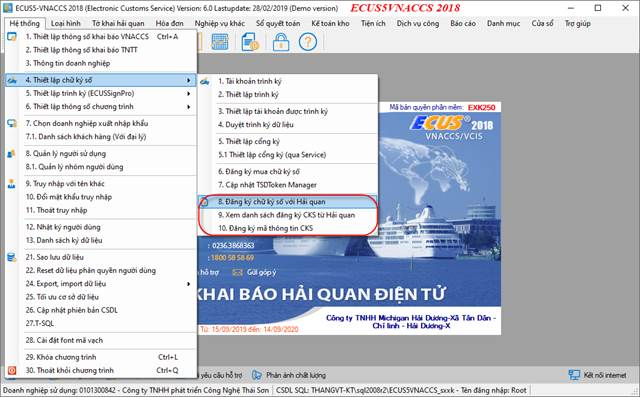
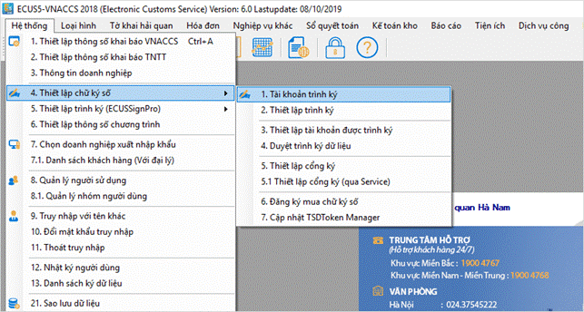
Ẩn chức năng "4.Khai báo thanh lý với Hải quan" và "Kết quả giao dịch" trong lần thanh lý sản xuất xuất khẩu:
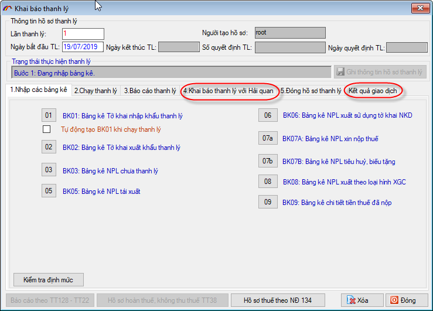
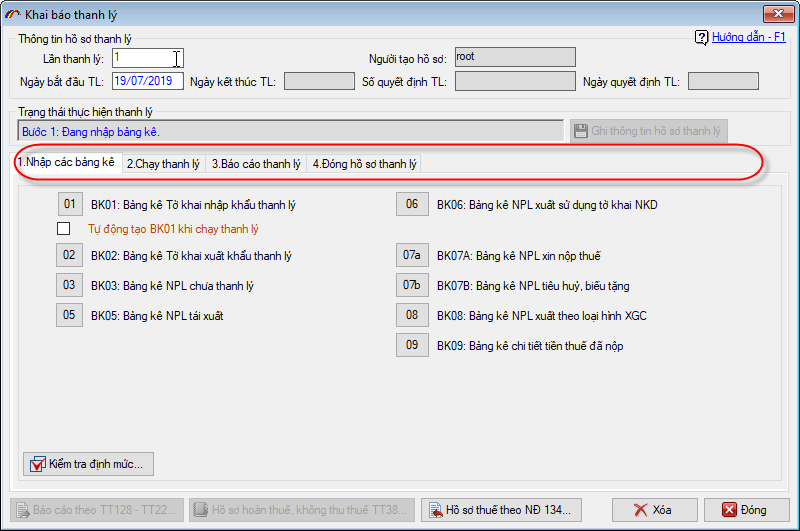
4. Thiết kế lại form của chức năng "Thiết lập thông số chương trình":
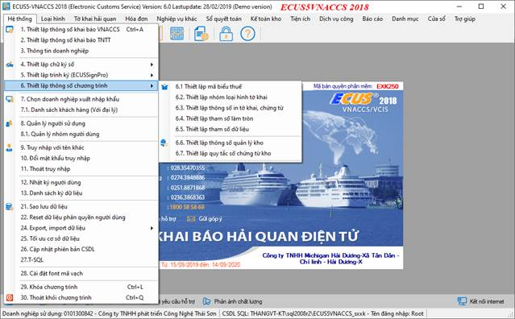
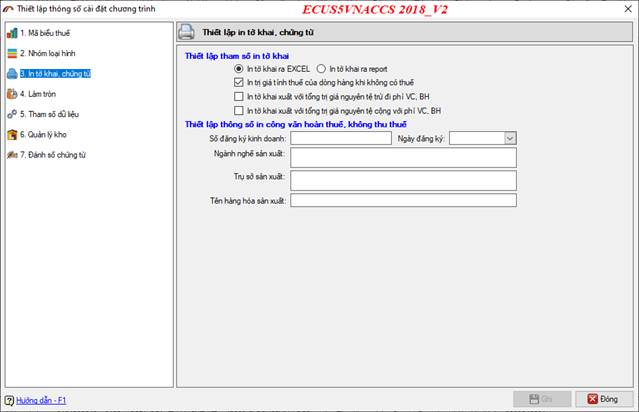
5. Thay đổi form chức năng "Thông tin Doanh nghiệp":
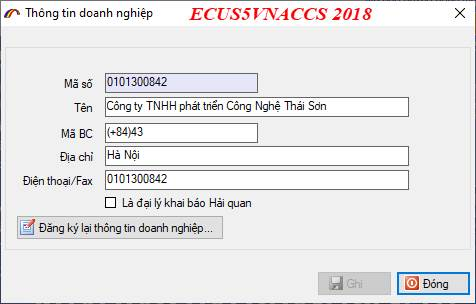
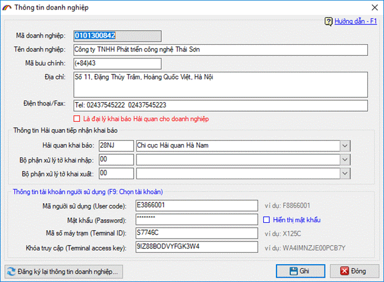
Ngoài ra, ECUS5VNACCS2018_V2 hỗ trợ lưu thông tin Doanh nghiệp đăng ký sử dụng vào database. Nếu Doanh nghiệp cài lại chương trình thì chỉ cần chọn mã số thuế sẽ lấy được thông số thiết lập khai báo từ đầu mà không cần nhập lại.
6. Nâng cấp hết các phần in chương trình theo mặc định không phụ thuộc excel.
Bỏ thiết lập chọn in tờ khai ra excel 2007 hay In tờ khai excel (không phụ thuộc phiên bản Excel), mà phần mềm mặc định tất cả các chức năng in không phụ thuộc excel:
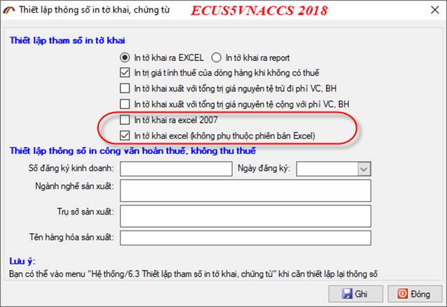
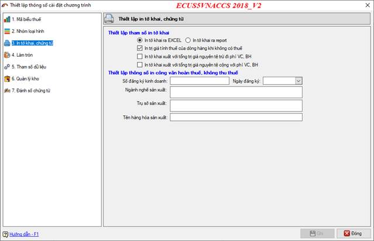
7. Nâng cấp hướng dẫn sử dụng.
Bổ sung hướng dẫn sử dụng online:
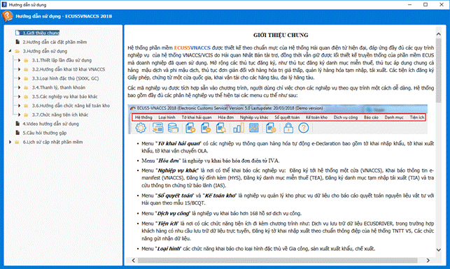
Trên tất cả các form nhập liệu, khai báo, tiện ích, chức năng đều có hướng dẫn sử dụng. Người dùng khi vướng mắc ở bất kỳ nội dung nào, có thể tích vào hướng dẫn sử dụng để tham khảo:
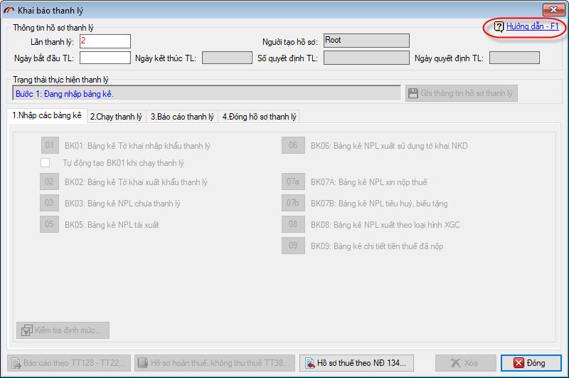
8. Thiết lập hiển thị định mức.
Ngày 27/08/2019 Tổng cục Hải quan ban hành văn bản số 858/CNTT-PTUD về việc nâng cấp hệ thống Gia công, sản xuất xuất khẩu, để đáp ứng quy định tại thông tư 39/2018/TT-BTC sửa đổi bổ sung Thông tư số 38/2015/TT-BTC ban hành ngày 20/04/2015. Theo quy định, người khai Hải quan phải thực hiện khai định mức thực tế theo mẫu số 27, Phụ lục I của Thông tư (Doanh nghiệp không phải khai báo chỉ tiêu tỷ lệ hao hụt). Tuy nhiên, do nhu cầu quản lý thực tế tại Doanh nghiệp, vẫn muốn theo dõi định mức có cả tỷ lệ hao hụt, phần mềm bổ sung chức năng thiết lập tùy chọn hiển thị tỷ lệ hao hụt khi quản lý định mức:
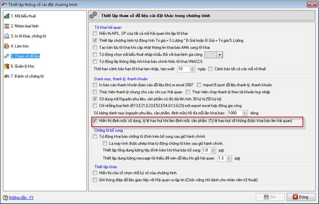
9. Cập nhật địa chỉ khai báo hệ thống TNTT.
Cập nhật địa chỉ khai báo hệ thống TNTT theo công văn số 989/CNTT-PTUD ngày 02/10/2019:
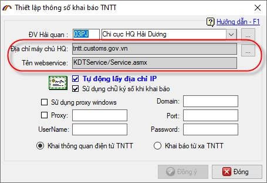
Bản quyền © thuộc về Công ty TNHH Phát triển công nghệ Thái Sơn